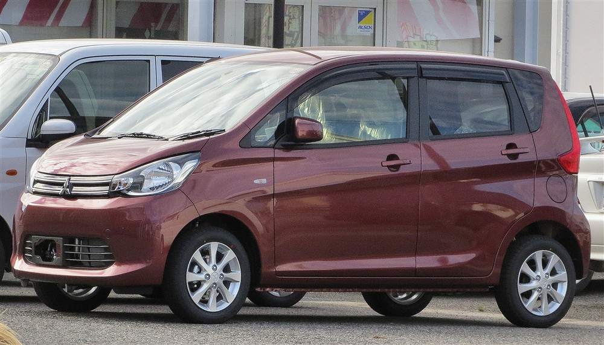
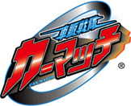
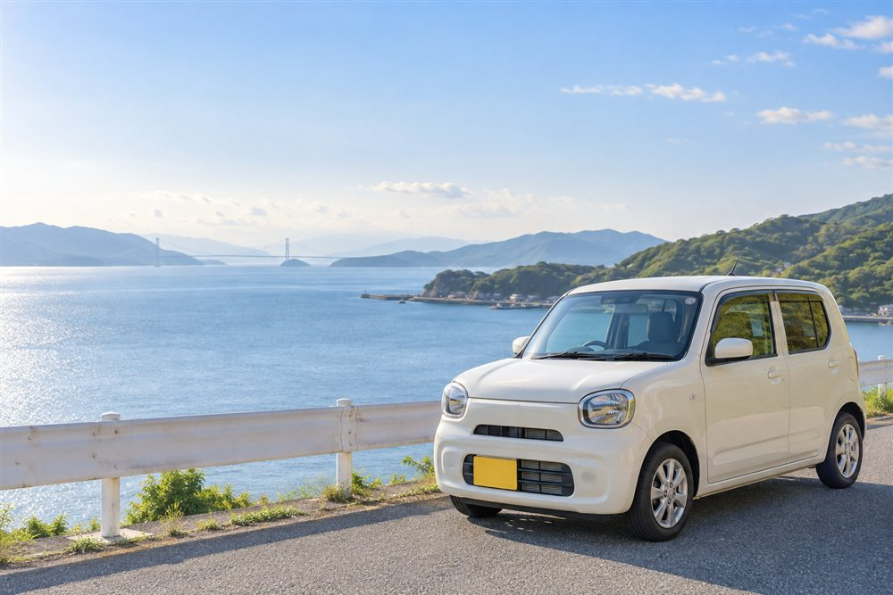
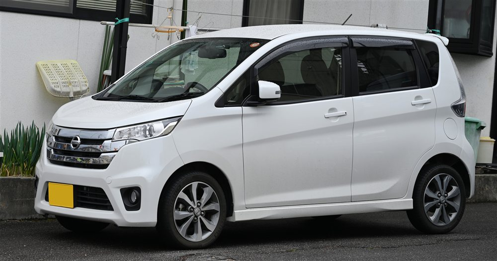
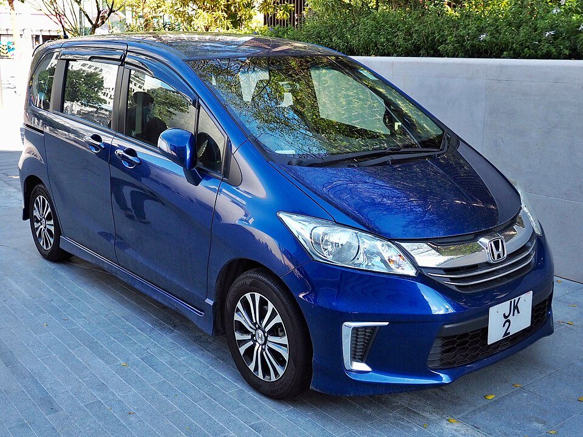
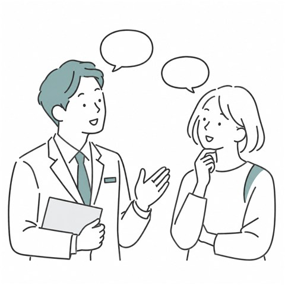
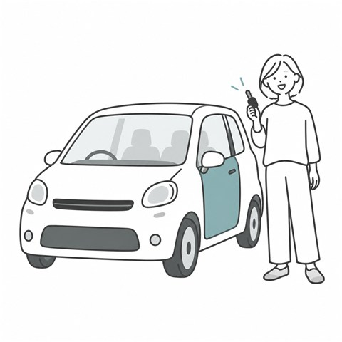

最安実用プランPLAN 01

毎日の移動を、もっと気軽に。
三菱 eKワゴン
月々15,000円〜
通勤やお買い物など毎日の足に。家計に一番優しい経済的な軽自動車。

淡路島本店 相談だけでもOKLINEで無料審査 ›淡路島で、車が必要なあなたへ。
淡路島で審査通過率 96%※1 の自社ローンなら、
あなたも車に乗れます。

「これから」を、
一緒に考えましょう。
審査通過率
96%※1頭金
0円から相談OK全国のネットワーク
200店舗超え※2相談無料。スマホひとつで、最初の一歩。
30秒で入力完了・相談無料LINEで無料仮審査をする信用情報機関への照会なし・履歴に残りません
LINE登録後の流れ
WE ARE HERE FOR YOU
淡路島での生活に、車は欠かせません。
仕事、買い物、子供の送迎…。
車がない生活なんて考えられませんよね。
でも、過去のちょっとしたつまずきで
門前払いされてしまう…。
どうか、自分を責めないでください。
悪いのはあなたではありません。
淡路島で同じ悩みを持っていた方が、
毎日相談に来られています。
OUR PROMISE
お一人おひとりのお話を伺う、独自の審査。
※ 一般的な仕組みの比較です。当店にも所定の審査があり、ご希望に添えない場合があります。
店頭に車を並べないのには、理由があります。
削ったコストを、月々のお支払いに還元。
月々 1.5万円〜
※ 月額は目安です。車両・契約条件により異なります。
A CAR FOR YOUR EVERYDAY
家計を圧迫しない、
現実的なお支払いプランをご用意しています。

毎日の移動を、もっと気軽に。
月々15,000円〜
通勤やお買い物など毎日の足に。家計に一番優しい経済的な軽自動車。

迷ったら、この1台。
月々20,000円〜
安心の先進安全装備と低燃費。淡路島内の移動にちょうどいい人気モデル。

家族も、荷物も、ゆったりと。
月々25,000円〜30,000円
お仕事の荷物積みやご家族の送迎に。ゆったり乗れるコンパクトミニバン。
※ 掲載車両はお取り寄せ例です。写真と実際のご提案車両は異なります。月額は目安で、年式・グレード・車両状態・契約条件により異なります。装備は車両ごとに異なります。支払い回数・総額・諸費用は個別のお見積もりでご案内します。
HOW IT WORKS
最短2時間で審査結果・ご利用可能枠が分かります
まずは気軽にご登録。
お名前や状況をスマホから送信。
月々無理のないお支払い枠が確定。

ご予算内で状態の良い1台をお届け。

※ 入力時間・審査時間は目安です。受付時間や必要情報の確認状況により、お時間をいただく場合があります。
VOICES FROM AWAJI
自己破産歴があり、どこも門前払いでした。でも太田店長は親身に話を聞いてくださり、無事に通勤用の車を納車していただけました。本当に感謝しています。
子どもを保育園に送迎するためにどうしても車が必要でした。誰にも知られずにLINEでこっそり相談でき、親切に対応してもらえて安心しました。
他店でローンが通らず仕事用の車を探していました。在庫を持たない分、予算内で調子の良い車を全国から探していただき、月々の負担も少なく助かっています。
※ 提供原稿によるお客様の声です（掲載許諾確認中）。個人の感想であり、同様の結果を保証するものではありません。
YOUR LOCAL PARTNER
LET'S TAKE THE FIRST STEP
その一歩が、毎日を変えるきっかけに。
太田店長が、あなたのお話をお伺いします。
信用情報機関への照会なし・履歴に残りません
LINE登録後の流れ